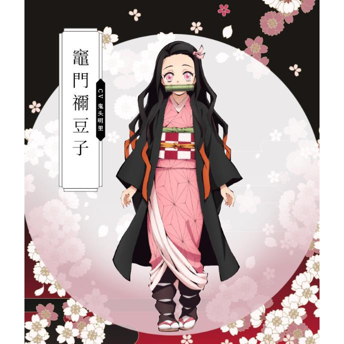
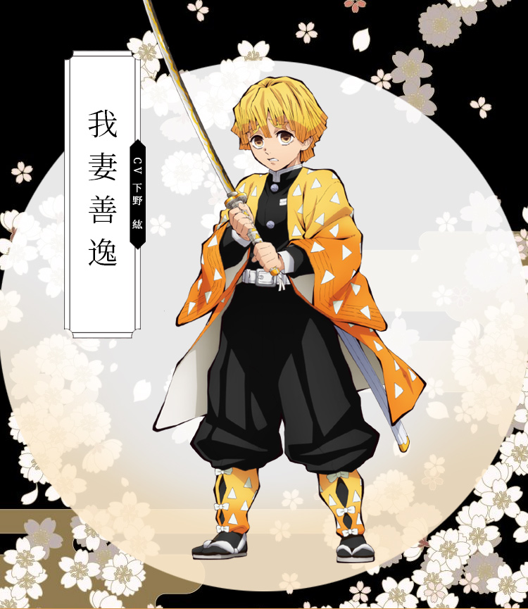
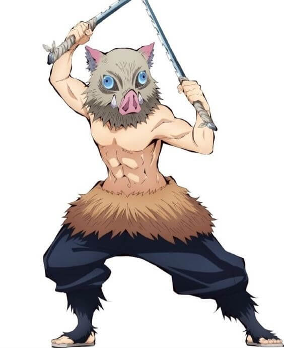
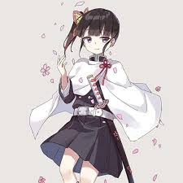
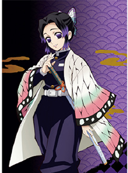
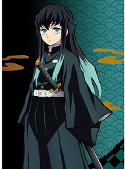
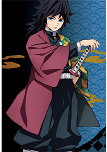
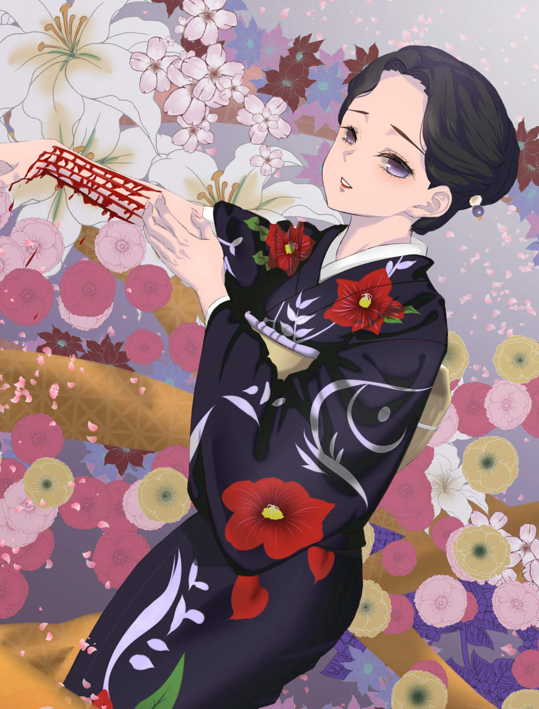

| 竈門炭治郎 | 竈門禰豆子 |
|---|---|
 |
 |
|
本作漫畫中的主人公，因為家中某日突然遭鬼襲擊，妹妹因此變為鬼，為了尋找回復成人類的治療方法，成為鬼殺隊的一員並且踏上冒險之途。儘管如此，卻有著一顆溫柔善良的心，認為鬼也有善惡之分，常常對自己刀下所斬殺的鬼產生同情，可說是相當典型的主角人設，此外身上也藏著打敗最終魔王的秘密。 |
網路人氣最高的主角的妹妹竈門禰豆子！在鬼的襲擊下雖然倖存下來，但也因此變為鬼，卻能壓抑自己對人血的渴望，一路隨著哥哥旅行冒險，並在關鍵時刻用鬼的力量保護人類。可愛的外表讓禰豆子在日本的第一回人氣投票結果中，拿下3319票獲得第3名；不過在台灣人氣更甚，超高的網路人氣讓她榮登冠軍寶座！ |
| 我妻善逸 | 伊之助 |
|  |  |
|
同樣有著相當多戲份，主角三人組之一的我妻善逸，性格卻也最膽小的一位，動不動就嚷嚷著自己要死了，但危急之際，卻又總是能以睡姿揮出精湛的劍術。雖然身為雷之呼吸使用者，卻只習得壹之型的霹靂一閃，但也將其練到爐火純青，威力非同小可。 |
漫畫中半途殺出的神祕劍士，使用自創的獸之呼吸。雖然有著粗魯殘暴的性格，並喜歡光著上半身、戴著山豬面具行徑如同野蠻人一般，面具底下卻長著一張婉如美少女的臉孔，加上反差萌的個性，有趣的設定反倒替他圈到無數的粉絲。 |
| 栗花落香奈乎 | 甘露寺蜜璃 |
|  |  |
|
漫畫中與炭治郎同期通過最終選拔的隊士，總是笑容滿面，但始終不發一語的沉默少女。隨著劇情推移才揭曉，因為悲慘的過去，導致她在溝通方面有困擾，思考上一板一眼常常不知該如何決定。同時也是網路上呼聲最高，希望與炭治郎成為一對的角色！ |
戀之呼吸的使用者，有著一頭粉紅色的頭髮，加上穿著暴露隊服的造型，初登場就令人印象深刻。因為天生體質特殊的關係，讓她一出生就有著過人的力氣，但也因此當上鬼殺隊的柱，並且曾經透露，為了要找到一個實力強大，可以保護她的好老公，才會拼命成為柱。 |
| 蝴蝶忍 | 時透無一郎 |
|  |  |
|
漫畫中唯一沒辦法將鬼腦袋斬下的柱，但卻是相對厲害的製毒師，使用蟲之呼吸以毒殺的方式擊敗各種鬼。平常總是笑臉迎人，卻被主角炭治郎發現背後藏著「生氣的味道」，追問之下得知因為親姐姐被鬼殺害，內心深處一直都憎恨著鬼。日本舉辦的第一回人氣投票結果中，也以1813高票獲得第6名。 |
鬼殺隊中年紀最小的柱，也是霞之呼吸的使用者，僅僅花兩個月就從隊士當上柱的天才。擁有強大的實力，卻因為喪失記憶的關係，平常總是望著天空發呆，呆萌的屬性反而意外受到不少粉絲喜愛。 |
| 富岡義勇 | 珠世 |
|  |  |
|
身為鬼殺隊水柱，使用與炭治郎一樣的水之呼吸，不只在相當早的時期就登場，也數度在千鈞一髮之際救下主角，冷酷的外表下卻相當講究義氣，甚至為了讓禰豆子活下來，不惜以自己的生命作為擔保。 |
總是以一襲美麗和服現身，實際年齡已經超過五百歲的珠世，雖然身為鬼卻處處幫助炭治郎，並且用高明的醫術研究發生在禰豆子身上的變化。另外更扮演著打敗最終魔王的關鍵角色，強悍與美麗的結合備受網友喜愛。 |